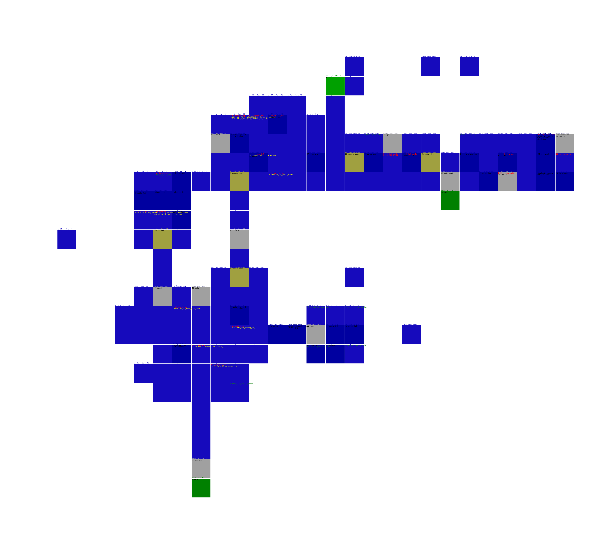
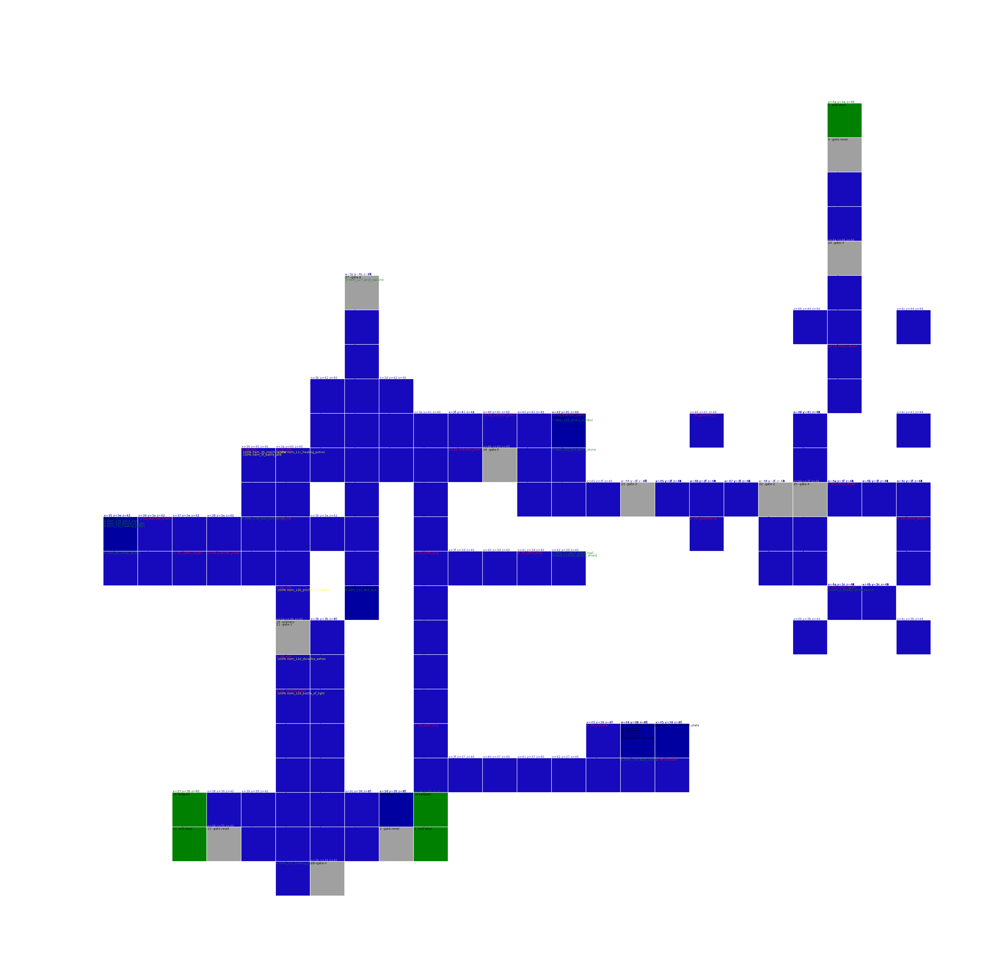
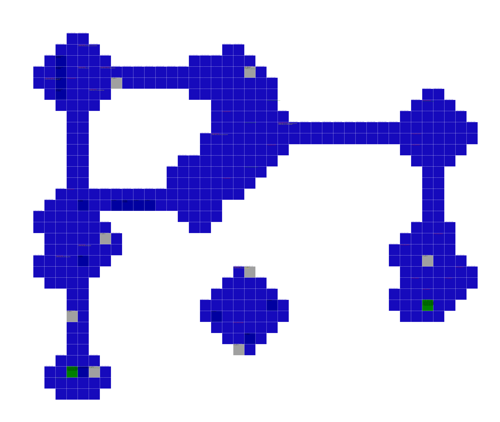
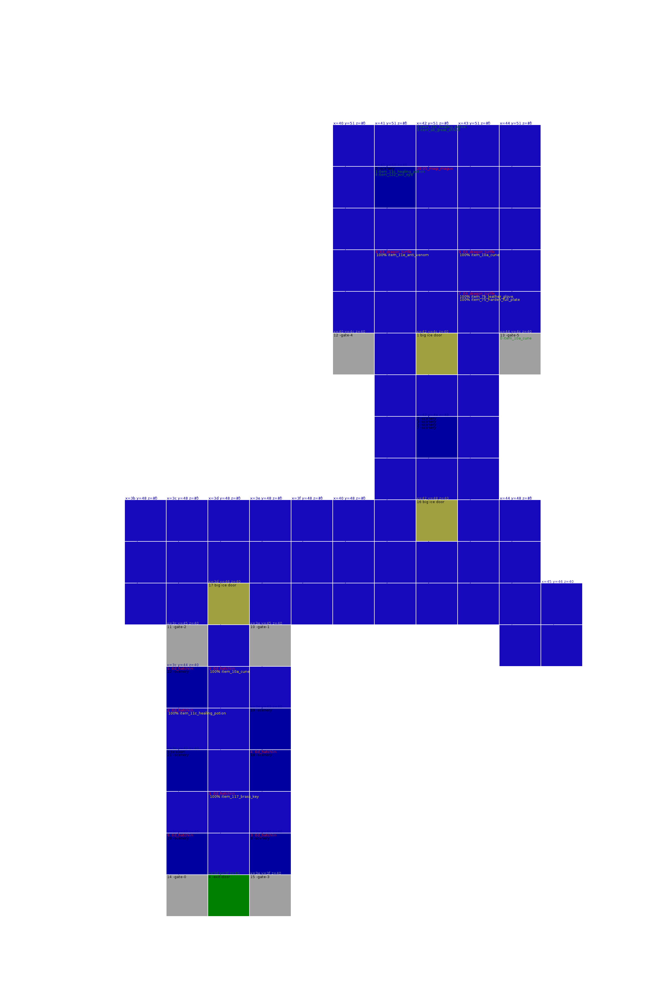
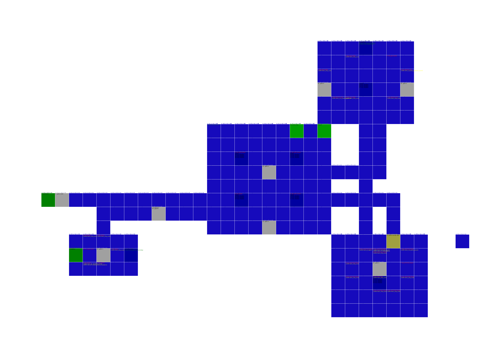
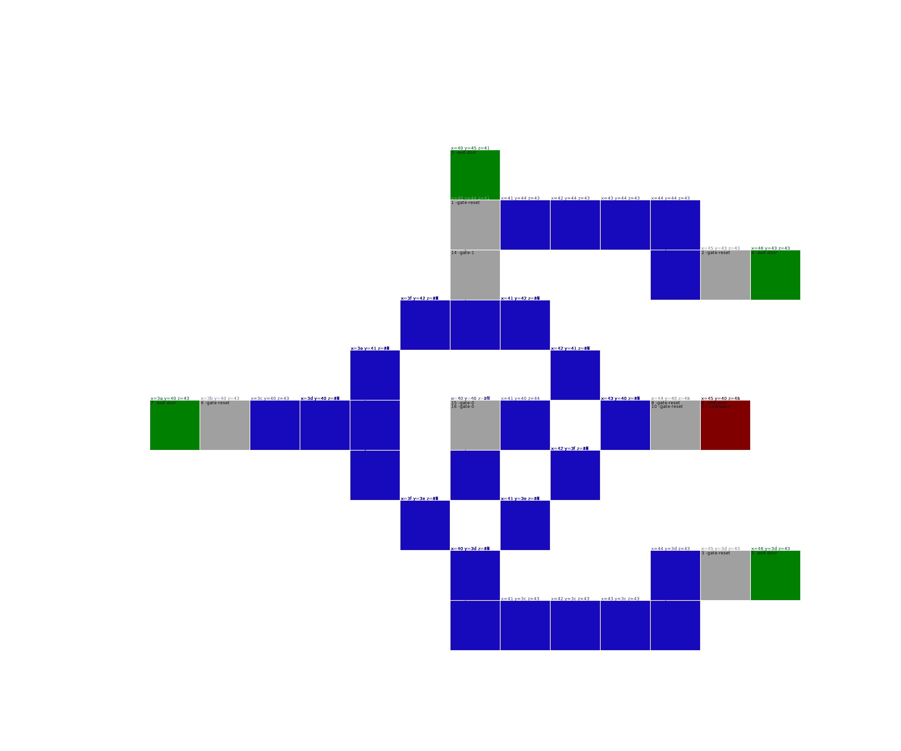

Human World
human_world_solitary_region
Item Memory used 16
Creatures score 270
0 01_acid_slime 100% 0x20 score 155 100% item_11e_anti_venom
1 01_acid_slime 100% 0x20 score 155 100% item_2c_deadly_great_sword
2 00_dark_spider 100% 0x25 score 117
3 09_sloth_bug 100% 0x35 score 268 100% item_11c_healing_potion
4 09_sloth_bug 100% 0x35 score 268 100% item_123_fire_world_stone
5 09_sloth_bug 100% 0x35 score 268 100% item_123_fire_world_stone
6 09_sloth_bug 100% 0x35 score 268 100% item_8c_master_arm_guard
7 09_sloth_bug 100% 0x35 score 268 100% item_87_swift_gauntlet 100% item_b6_caustic_tower_shield 100% item_7d_wooden_glove
8 01_acid_slime 100% 0x20 score 155 100% item_4c_devil_crown
9 09_sloth_bug 100% 0x35 score 268 100% item_123_fire_world_stone
a 09_sloth_bug 100% 0x35 score 268 100% item_11c_healing_potion
b 08_hermit_crab 100% 0x35 score 776 100% item_11c_healing_potion
c 09_demon_bat 100% 0x20 score 134
d 09_demon_bat 100% 0x20 score 134 100% item_136_soul_pod_5_sp
e 02_blood_slime 100% 0x90 score 192 100% item_d0_holy_ring_of_resist 100% item_b5_tower_shield_of_protect
f 08_hermit_crab 100% 0x35 score 776 100% item_12e_dorados_ashes
10 02_blood_slime 100% 0x90 score 192
11 02_blood_slime 100% 0x90 score 192
12 02_blood_slime 100% 0x90 score 192
20 08_hermit_crab 100% 0x0 score 776
31 exit-door Skeleton -> human_world_hidden_region pos( -3 ,0 ,-3)
34 exit-door Cemetery -> human_world_hidden_region pos( 0 ,0 ,0)
35 exit-door Grave -> human_world_cursed_region pos( 0 ,0 ,0)
38 exit-door Church -> shadow_tower_part1 pos( 5 ,3 ,5)
0 item_23_guardian_bastard_sword
1 item_11d_magic_potion
2 item_136_soul_pod_5_sp
3 item_128_spirit_book
4 item_11e_anti_venom
5 item_120_divine_symbol
7 item_26_righteous_sword
8 item_124_poison_vaccine
9 item_d1_holy_ring_of_priest

human_world_hidden_region
Item Memory used 16
Creatures score 1026
0 02_karasu 100% 0x50 score 1074 100% item_ba_harden_gothic_shield
1 02_karasu 100% 0x50 score 1074 100% item_e6_ring_of_drain
2 02_karasu 100% 0x20 score 1074 100% item_1b_swift_bastard_sword
3 09_koazul 100% 0x20 score 863 100% item_136_soul_pod_5_sp
4 06_fanged_worm 100% 0x50 score 219 100% item_d6_dark_sorcerer_ring 100% item_24_dark_sword
5 05_water_knight 100% 0x20 score 534
6 00_master_knight 100% 0x20 score 972
7 05_water_knight 100% 0x20 score 534 100% item_126_bottle_of_light
8 05_water_knight 100% 0x20 score 534 100% item_139_soul_pod_14_sp
9 05_water_knight 100% 0x20 score 534
a 05_water_knight 100% 0x20 score 534 100% item_11e_anti_venom
b 00_master_knight 100% 0x20 score 972
c 0d_cocoon_plant 100% 0x50 score 192
d 0d_cocoon_plant 100% 0x50 score 192
e 01_myconid 100% 0x20 score 283
f 01_myconid 100% 0x20 score 283
10 01_myconid 100% 0x20 score 283
11 01_myconid 100% 0x20 score 283
20 06_mystic_tower 100% 0x50 score 484
9 exit-door Jail -> human_world_solitary_region pos( 4 ,0 ,4)
13 exit-door Corridor -> human_world_solitary_region pos( 7 ,0 ,7)
26 exit-totem Totem -> shadow_tower_part1 pos( 6 ,-6 ,6)
0 item_e0_ring_of_ice
1 item_138_soul_pod_29_sp
2 item_124_poison_vaccine
3 item_6d_shining_plate_mail
4 item_127_acid_vaccine
5 item_10c_torch
6 item_11d_magic_potion
7 item_10e_sacred_feather
8 item_11c_healing_potion
9 item_10d_lamp
a item_11d_magic_potion
b item_bc_gothic_shield_of_resist
c item_139_soul_pod_14_sp
d item_120_divine_symbol

human_world_forgotten_region
Item Memory used 16
Creatures score 238
0 0a_bone_wolf 0% 0x30 score 1388 100% item_10e_sacred_feather
1 0a_bone_wolf 0% 0x30 score 1388 100% item_ee_mighty_ring
2 0a_bone_wolf 0% 0x30 score 1388 100% item_df_ring_of_desire
3 0a_bone_wolf 0% 0x30 score 1388 100% item_9e_leg_guard_of_protect
4 0a_bone_wolf 0% 0x30 score 1388 100% item_57_harden_great_helm 100% item_11_broad_sword
5 01_blood_skull 100% 0x30 score 208
6 01_blood_skull 100% 0x30 score 208
7 01_blood_skull 100% 0x30 score 208 100% item_5a_holy_great_helm 100% item_10_broad_sword 100% item_c7_priest_ring_of_fire
8 01_blood_skull 100% 0x30 score 208 100% item_f2_priest_bracelet
9 05_blood_skull 100% 0x30 score 208 100% item_96_swift_steel_boots
a 01_blood_skull 100% 0x30 score 208
b 05_blood_skull 100% 0x30 score 208 100% item_ec_bracelet_of_recovery
c 05_blood_skull 100% 0x30 score 208 100% item_11f_anti_paralytic
d 05_blood_skull 100% 0x30 score 208 100% item_3e_living_axe
e 00_acid_skull 100% 0x30 score 219
f 00_acid_skull 100% 0x30 score 219
10 00_acid_skull 100% 0x30 score 219 100% item_11c_healing_potion
11 00_acid_skull 100% 0x30 score 219
12 00_acid_skull 100% 0x30 score 219 100% item_12e_dorados_ashes
13 00_acid_skull 100% 0x30 score 219
6 unknown id=111 6 5b80 38c380 unknown tile( 46, 40, 3d) 46 40 3d 0 6f 0 0 0 0 4 0 0 0 0 17 0 1c fc ff f0 ff ff 0 ff
18 exit-totem Totem -> shadow_tower_part1 pos( 5 ,-5 ,5)
34 exit-door Exit -> shadow_tower_part1 pos( 1 ,6 ,1)
37 exit-door Jump down -> shadow_tower_part1 pos( 2 ,7 ,2)
41 exit-totem Drop in -> shadow_tower_part1 pos( 15 ,-8 ,15)
0 item_10c_torch
1 item_11e_anti_venom
2 item_11c_healing_potion
3 item_136_soul_pod_5_sp
4 item_11c_healing_potion
5 item_10e_sacred_feather
6 item_42_bow
7 item_136_soul_pod_5_sp
8 item_e1_ring_of_dark_souls
9 item_130_blue_crystal
a item_123_fire_world_stone

human_world_cursed_region
Item Memory used 16
Creatures score 281
0 01_beak_plant 100% 0x30 score 191
1 01_beak_plant 100% 0x30 score 191 100% item_12e_dorados_ashes
2 0a_horned_slime 100% 0x35 score 273
3 0a_horned_slime 100% 0x35 score 273 100% item_10e_sacred_feather
4 08_apocrypha 100% 0x30 score 861 100% item_bb_gothic_shield 100% item_17_dragon_sword
5 0a_horned_slime 100% 0x35 score 273
6 0a_horned_slime 100% 0x35 score 273 100% item_139_soul_pod_14_sp
7 0a_horned_slime 100% 0x35 score 273 100% item_30_guardian_great_sword 100% item_61_scale_mail
8 0a_horned_slime 100% 0x35 score 273 100% item_4b_wizard_crown
9 02_tongue_imp 100% 0x30 score 133 100% item_eb_bracelet_of_curing 100% item_a4_small_shield 100% item_98_steel_boots_of_resist
a 02_tongue_imp 100% 0x30 score 133
b 0c_worm_face 100% 0x30 score 480 100% item_137_soul_pod_53_sp
c 0c_worm_face 100% 0x30 score 480 100% item_11e_anti_venom
d 02_gordoral 100% 0x30 score 543 100% item_ed_mind_bracelet
e 0c_worm_face 100% 0x30 score 480 100% item_70_eternal_plate_mail
f 02_gordoral 100% 0x80 score 543
10 02_gordoral 100% 0x10 score 543 100% item_a0_holy_leg_guard
21 0a_guardian_a 100% 0x50 score 248
30 04_fat_mole_a 100% 0x30 score NaN 100% item_c3_holy_gothic_shield
3 exit-door Entrance -> human_world_solitary_region pos( 9 ,2 ,9)
31 exit-door Guardian side -> shadow_tower_part1 pos( -4 ,6 ,-4)
0 item_ef_deadly_bracelet
1 item_dc_caustic_ring
2 item_125_dust_of_rage
3 item_de_caustic_sorcerer_ring
4 item_52_full_helm_of_curing
5 item_124_poison_vaccine
6 item_43_warrior_bow
7 item_10e_sacred_feather

Earth World
earth_world_rotting_cavern
Item Memory used 16
Creatures score 811
0 06_elder 100% 0x30 score 220 100% item_b4_harden_tower_shield
1 02_dark_imp 100% 0x20 score 899 100% item_47_cap 100% item_a9_large_shield_of_balance 100% item_1f_frosty_bastard_sword
2 02_dark_imp 100% 0x20 score 899 100% item_118_iron_key
3 02_dark_imp 100% 0x20 score 899 100% item_20_shining_bastard_sword
4 08_dark_spider 100% 0x30 score 117
5 08_dark_spider 100% 0x30 score 117 100% item_116_key_of_delusion
6 08_dark_spider 100% 0x30 score 117
7 02_dark_imp 100% 0x20 score 899 100% item_127_acid_vaccine
8 0e_elder 100% 0x40 score 220 100% item_2f_mighty_great_sword 100% item_64_plate_mail
9 0e_elder 100% 0x40 score 220 100% item_125_dust_of_rage
a 02_mystic_tower 100% 0x35 score 484 100% item_12a_young_dragon_gem
b 02_mystic_tower 100% 0x35 score 484
c 02_mystic_tower 100% 0x35 score 484
d 02_watcher_plant 100% 0x20 score 145 100% item_be_gothic_shield_of_balance 100% item_93_steel_boots_of_curing 100% item_d9_ring_of_protect
e 02_watcher_plant 100% 0x20 score 145 100% item_71_devil_plate_mail 100% item_94_steel_boots_of_resist
f 02_watcher_plant 100% 0x20 score 145
10 02_watcher_plant 100% 0x20 score 145
11 02_watcher_plant 100% 0x20 score 145
12 0e_watcher_plant 100% 0x25 score 145
13 0e_watcher_plant 100% 0x25 score 145
14 0e_watcher_plant 100% 0x25 score 145
15 00_black_onyx 100% 0x10 score 624
16 00_black_onyx 100% 0x10 score 624
17 00_black_onyx 100% 0x10 score 624
18 00_black_onyx 100% 0x10 score 624
19 0c_barrel_snail 100% 0x20 score 223
1a 0c_barrel_snail 100% 0x20 score 223
1b 02_elder 100% 0x60 score 220
1c 02_elder 100% 0x30 score 220
1d 02_elder 100% 0x30 score 220
1e 02_elder 100% 0x30 score 220
20 00_red_puppet 100% 0x10 score 1157
30 0a_blank 100% 0x20 score 35
13 exit-door Entrance -> shadow_tower_part1 pos( 0 ,9 ,0)
0 item_12e_dorados_ashes
1 item_e_shadow_tiger
2 item_12e_dorados_ashes
3 item_122_evil_eye
4 item_136_soul_pod_5_sp
5 item_1d_crushing_bastard_sword
6 item_2d_keenest_great_sword
7 item_118_iron_key

earth_world_poisonous_cavern
Item Memory used 16
Creatures score 284
0 08_star_serpent 100% 0x15 score 201 100% item_136_soul_pod_5_sp
1 08_star_serpent 100% 0x15 score 201 100% item_11e_anti_venom
2 08_star_serpent 100% 0x15 score 201 100% item_dd_caustic_priest_ring 100% item_19_bastard_sword
3 06_tongue_imp 100% 0x15 score 133 100% item_128_spirit_book
4 06_tongue_imp 100% 0x15 score 133 100% item_131_flaming_key
5 06_tongue_imp 100% 0x15 score 133
6 06_tongue_imp 100% 0x15 score 133
7 08_star_serpent 100% 0x15 score 201 100% item_11e_anti_venom
8 08_star_serpent 100% 0x15 score 201 100% item_2a_swift_great_sword
9 08_star_serpent 100% 0x15 score 201 100% item_11c_healing_potion
a 08_star_serpent 100% 0x15 score 201 100% item_11c_healing_potion
b 00_acid_slime 100% 0x50 score 155 100% item_f_broad_sword
c 00_acid_slime 100% 0x60 score 155 100% item_11c_healing_potion
d 04_great_frog 100% 0x40 score 845 100% item_f8_holy_bracelet
e 04_great_frog 100% 0x40 score 845
f 04_great_frog 100% 0x40 score 845
10 0c_hanging_dead 100% 0x15 score 110
11 0c_hanging_dead 100% 0x15 score 110
12 0c_hanging_dead 100% 0x15 score 110
13 0c_hanging_dead 100% 0x15 score 110
14 0c_hanging_dead 100% 0x15 score 110
15 0c_hanging_dead 100% 0x15 score 110
16 00_watcher_plant 100% 0x20 score 145
17 00_watcher_plant 100% 0x20 score 145
18 00_watcher_plant 100% 0x20 score 145
19 04_berzerker 100% 0x30 score 543
1a 04_berzerker 100% 0x30 score 543
1b 04_berzerker 100% 0x30 score 543
1d 08_star_serpent 100% 0x20 score 201
1e 04_berzerker 100% 0x30 score 543
1f 04_berzerker 100% 0x30 score 543
20 00_duhrin 100% 0x10 score 285 100% item_12f_spirit_key
30 05_blank 100% 0x20 score NaN
31 04_auriel_b 100% 0x70 score 407
32 0b_blank 100% 0x50 score NaN
33 0a_blank 100% 0x50 score 39
10 exit-door Rock guy -> earth_world_quaking_cavern pos( 0 ,0 ,0)
13 exit-door Poison -> earth_world_stone_cavern pos( 0 ,0 ,0)
17 exit-door Entrance -> shadow_tower_part1 pos( 4 ,9 ,4)
0 item_120_divine_symbol
1 item_127_acid_vaccine
2 item_12e_dorados_ashes
3 item_11c_healing_potion
5 item_136_soul_pod_5_sp
6 item_c2_shinning_gothic_shield
7 item_11c_healing_potion
8 item_120_divine_symbol
a item_12e_dorados_ashes
b item_11d_magic_potion
1c item_11f_anti_paralytic
1d item_12f_spirit_key

earth_world_stone_cavern
Item Memory used 16
Creatures score 235
0 01_demon_bat 100% 0x60 score 134 100% item_11c_healing_potion
1 01_demon_bat 100% 0x50 score 134 100% item_124_poison_vaccine
2 01_demon_bat 100% 0x50 score 134 100% item_10d_lamp
3 05_hobble_worm 100% 0x30 score 239
4 05_hobble_worm 100% 0x30 score 239 100% item_126_bottle_of_light
5 05_hobble_worm 100% 0x30 score 239 100% item_10e_sacred_feather
6 05_hobble_worm 100% 0x30 score 239 100% item_11c_healing_potion
7 05_hobble_worm 100% 0x30 score 239 100% item_d_shadow_wolf 100% item_84_gauntlet
8 05_hobble_worm 100% 0x30 score 239
9 05_hobble_worm 100% 0x30 score 239
a 0a_barrel_snail 100% 0x40 score 268 100% item_12f_spirit_key
b 0a_barrel_snail 100% 0x40 score 268
c 08_clay_servant 100% 0x25 score 375 100% item_81_fiery_gauntlet
d 08_clay_servant 100% 0x25 score 375 100% item_10d_lamp
e 08_clay_servant 100% 0x25 score 375 100% item_5d_leather_armor
f 08_clay_servant 100% 0x25 score 375
10 0a_barrel_snail 100% 0x40 score 268
11 0a_barrel_snail 100% 0x40 score 268
12 0a_barrel_snail 100% 0x40 score 268
13 0c_dybbuk 100% 0x25 score 233
14 0d_crying_root 100% 0x20 score 180
15 0d_crying_root 100% 0x20 score 180
16 0d_crying_root 100% 0x20 score 180
17 0d_crying_root 100% 0x80 score 180
30 00_dybbuk 100% 0x50 score 234
31 04_dybbuk 100% 0x0 score 234
32 04_dybbuk 100% 0x0 score 234
4 exit-door Entrance -> earth_world_poisonous_cavern pos( 10 ,1 ,10)
7 exit-door Exit -> earth_world_false_pit_cavern pos( -3 ,0 ,-3)
0 item_32_mace
1 item_1_short_sword
2 item_130_blue_crystal
3 item_11c_healing_potion
4 item_11e_anti_venom
5 item_1a_lethal_bastard_sword
6 item_127_acid_vaccine
7 item_e4_ring_of_dead_spirit

earth_world_quaking_cavern
Item Memory used 16
Creatures score 289
0 0c_ray_plant 100% 0x30 score 386 100% item_12e_dorados_ashes
1 0c_ray_plant 100% 0x30 score 386
2 0c_ray_plant 100% 0x30 score 386 100% item_a3_small_shield
3 0c_ray_plant 100% 0x30 score 386 100% item_11e_anti_venom
4 0c_ray_plant 100% 0x30 score 386
5 0c_ray_plant 100% 0x30 score 386 100% item_a1_buckler
6 08_dark_spider 100% 0x60 score 117 100% item_10d_lamp
7 08_dark_spider 100% 0x10 score 117 100% item_3_long_sword
8 08_dark_spider 100% 0x10 score 117 100% item_129_sealed_sword_stone
9 08_dark_spider 100% 0x10 score 117 100% item_1e_fiery_bastard_sword
a 08_dark_spider 100% 0x10 score 117
b 05_horned_skull 100% 0x90 score 6488
c 05_doriwi 100% 0x35 score 1388
d 05_doriwi 100% 0x35 score 1388
e 05_doriwi 100% 0x35 score 1388
f 05_horned_skull 100% 0x30 score 6488
10 05_horned_skull 100% 0x30 score 6488
11 05_horned_skull 100% 0x30 score 6488
12 02_horned_slime 100% 0x30 score 273
13 02_horned_slime 100% 0x30 score 273
14 02_horned_slime 100% 0x30 score 273
15 02_horned_slime 100% 0x30 score 273
16 00_kabasaur 100% 0x40 score 568
17 00_kabasaur 100% 0x40 score 568
18 00_kabasaur 100% 0x40 score 568
20 02_sand_leech_b 100% 0x10 score 441
21 02_sand_leech_b 100% 0x10 score 441
22 02_sand_leech_b 100% 0x10 score 441
3 exit-door Entrance -> earth_world_poisonous_cavern pos( 9 ,1 ,9)
0 item_136_soul_pod_5_sp
1 item_11e_anti_venom
2 item_88_deadly_gauntlet
3 item_127_acid_vaccine
4 item_f1_sorcerer_bracelet
5 item_120_divine_symbol
6 item_c_shadow_blade
7 item_136_soul_pod_5_sp
8 item_c1_gothic_shield_of_rage
9 item_bf_master_gothic_shield

earth_world_false_pit_cavern
Item Memory used 15
Creatures score 1010
0 0c_old_face 100% 0x50 score 1042
1 0c_saurian_warrior_a 100% 0x50 score 1224 100% item_5b_quilted_armor 100% item_a_rapier 100% item_74_plate_mail_of_honor
2 0c_saurian_warrior_a 100% 0x10 score 1224 100% item_59_mystic_great_helm 100% item_d8_ring_of_poison
3 0c_saurian_warrior_a 100% 0x10 score 1224 100% item_6f_plate_mail_of_protect 100% item_80_metal_glove 100% item_21_deadly_bastard_sword
4 0c_saurian_warrior_a 100% 0x10 score 1224 100% item_10a_cune
5 0c_saurian_warrior_a 100% 0x10 score 1224
6 05_hell_hunter 100% 0x10 score 640
7 05_hell_hunter 100% 0x10 score 640 100% item_11c_healing_potion
8 05_hell_hunter 100% 0x10 score 640
9 01_earth_knight 100% 0x20 score 391 100% item_44_bow_gun 100% item_37_frosty_morning_star 100% item_f7_priest_bracelet
a 01_earth_knight 100% 0x20 score 391
b 08_guardian_b 75% 0x30 score 387 100% item_10a_cune
c 08_guardian_b 75% 0x30 score 387 100% item_d3_dark_ring
d 00_dark_spider 100% 0x20 score 117
e 00_dark_spider 100% 0x20 score 117 100% item_11c_healing_potion
f 00_dark_spider 100% 0x20 score 117
10 00_dark_spider 100% 0x20 score 117 100% item_6e_dark_plate_mail
11 0d_saurian_warrior_b 100% 0x50 score 1240 100% item_e2_black_ring
12 05_armored_warrior 100% 0x50 score 1094
13 05_armored_warrior 100% 0x10 score 1094 100% item_fb_magical_amulet 100% item_6c_caustic_plate_mail
14 05_armored_warrior 100% 0x10 score 1094
15 05_armored_warrior 100% 0x10 score 1094 100% item_136_soul_pod_5_sp
16 05_armored_warrior 100% 0x10 score 1094 100% item_90_steel_boots 100% item_6b_frosty_plate_mail 100% item_108_amulet_of_winter
1 exit-door Bridge -> earth_world_hostile_rock_cavern pos( -2 ,0 ,-2)
3 exit-door Entrance -> earth_world_stone_cavern pos(-16 ,5,-16)
5 unknown id=96 5 5b68 7f8b68 unknown tile( 44, 40, 38) 44 40 38 0 60 0 0 0 a8 fd 40 f1 0 f8 3d 0 64 fe 0 0 ff ff 0 ff
6 unknown id=96 6 5b80 7f8b80 unknown tile( 44, 40, 38) 44 40 38 0 60 0 0 0 58 2 40 f1 0 f8 3d 0 64 fe 0 0 ff ff 0 ff
7 unknown id=96 7 5b98 7f8b98 unknown tile( 44, 40, 38) 44 40 38 0 60 0 0 0 0 0 40 f1 58 fa 3d 0 60 fe 0 0 ff ff 0 ff
8 unknown id=96 8 5bb0 7f8bb0 unknown tile( 44, 40, 38) 44 40 38 0 60 0 0 0 0 0 40 f1 a8 f5 3e 0 5c fe 0 0 ff ff 0 ff
11 exit-door Exit -> shadow_tower_part2 pos( 0 ,1 ,0)
16 exit-totem Totem -> shadow_tower_part1 pos( 6 ,1 ,6)
19 exit-totem Jump in -> shadow_tower_part1 pos( 33 ,-1 ,33)
0 item_11c_healing_potion
1 item_110_fiery_key
2 item_12e_dorados_ashes
3 item_11c_healing_potion
4 item_99_leg_guard
5 item_11c_healing_potion
6 item_11c_healing_potion
7 item_139_soul_pod_14_sp
8 item_10a_cune
9 item_11c_healing_potion
a item_cc_priest_ring_of_frost
b item_130_blue_crystal
c item_11d_magic_potion
d item_11c_healing_potion

earth_world_hostile_rock_cavern
Item Memory used 10
Creatures score 204
0 0d_tondrom 100% 0x30 score 212 100% item_10a_cune
1 0d_tondrom 100% 0x30 score 212
2 0d_tondrom 100% 0x30 score 212 100% item_11c_healing_potion
3 0d_tondrom 100% 0x30 score 212 100% item_cd_sorcerer_ring_of_frost
4 05_acid_pod 100% 0x60 score 192 100% item_36_swift_morning_star 100% item_e8_bracelet_of_balance
5 05_acid_pod 100% 0x60 score 192
6 09_dwarf_warrior 100% 0x30 score 201 100% item_72_holy_plate_mail
7 09_dwarf_warrior 100% 0x30 score 201 100% item_d5_dark_priest_ring 100% item_55_great_helm 100% item_b8_tower_shield_of_resist
8 09_dwarf_warrior 100% 0x30 score 201 100% item_c9_summoner_ring_of_frost
9 09_dwarf_warrior 100% 0x30 score 201 100% item_8b_deadly_arm_guard
a 09_dwarf_warrior 100% 0x30 score 201 100% item_11c_healing_potion
21 04_dread_knight 100% 0x10 score 773
1 exit-door Entrance -> earth_world_false_pit_cavern pos( 10 ,0 ,10)
3 exit-totem Boss room -> - pos( 15 ,-3 ,15)
0 item_11e_anti_venom
1 item_12d_pitcher_of_nadya_mp
2 item_a6_large_shield
3 item_ca_summoner_ring_of_frost
4 item_120_divine_symbol

Fire World
fire_world_burning_cavern
Item Memory used 14
Creatures score 616
0 09_blood_slime 100% 0x30 score 192 100% item_db_caustic_ring
1 09_blood_slime 100% 0x30 score 192 100% item_10a_cune
2 09_blood_slime 100% 0x50 score 192 100% item_a2_buckler
3 09_blood_slime 100% 0x30 score 192 100% item_e3_ring_of_seal
4 09_blood_slime 100% 0x30 score 192 100% item_10a_cune
5 09_blood_slime 100% 0x30 score 192 100% item_b_lethal_rapier 100% item_89_arm_guard
6 0d_dweller 100% 0x80 score 495 100% item_ac_great_shield
7 0d_dweller 100% 0x30 score 495 100% item_8e_leather_boots 100% item_b7_tower_shield_of_balance
8 0d_dweller 100% 0x30 score 495
9 04_jinn_lord 100% 0x50 score 13742
a 0d_dweller 100% 0x60 score 495 100% item_136_soul_pod_5_sp
b 0d_dweller 100% 0x60 score 495
c 0d_dweller 100% 0x60 score 495 100% item_10a_cune
d 0d_dweller 100% 0x60 score 495 100% item_a5_shield_of_resist 100% item_41_keenest_battle_axe
e 0d_death_serpent 100% 0x60 score 1291
f 0d_death_serpent 100% 0x60 score 1291 100% item_113_beast_key
10 09_iron_crusher 100% 0x60 score 495
11 0d_death_serpent 100% 0x90 score 1291 100% item_10a_cune
12 0d_death_serpent 100% 0x90 score 1291
13 0a_dark_bishop 100% 0x40 score 749
14 0a_dark_bishop 100% 0x40 score 749 100% item_136_soul_pod_5_sp
15 0a_dark_bishop 100% 0x30 score 749
16 06_mystic_tower 100% 0x40 score 484 100% item_11c_healing_potion
17 06_mystic_tower 100% 0x40 score 484 100% item_e5_ring_of_rage 100% item_ad_great_shield_of_balance
18 06_mystic_tower 100% 0x40 score 484 100% item_10a_cune
19 06_mystic_tower 100% 0x40 score 484 100% item_35_morning_star
1a 0a_dark_bishop 100% 0x30 score 749
37 exit-door Entrance -> shadow_tower_part2 pos( -5 ,3 ,-5)
93 exit-portal Room -> shadow_tower_part1 pos( 18 ,33 ,18)
94 exit-portal Platform -> - pos( 24 ,12 ,24)
99 unknown id=252 99 6438 9b3c38 unknown tile( 35, 3f, 38) 35 3f 38 0 fc 0 0 0 0 0 0 4 0 0 8d 0 21 4 fd 0 0 12 2 0
0 item_11d_magic_potion
1 item_11c_healing_potion
2 item_11d_magic_potion
3 item_73_full_plate
4 item_124_poison_vaccine
fire_world_molten_cavern
Item Memory used 16
Creatures score 14707
0 08_war_demon_1 100% 0x20 score 1040 100% item_10e_sacred_feather
1 08_war_demon_1 100% 0x30 score 1040
2 08_war_demon_1 100% 0x30 score 1040 100% item_120_divine_symbol
3 08_war_demon_1 100% 0x60 score 1040 100% item_2e_crushing_great_sword 100% item_8a_arm_guard_of_composure
4 08_war_demon_1 100% 0x30 score 1040 100% item_49_crown_of_resist
5 08_war_demon_1 100% 0x30 score 1040 100% item_33_crushing_mace
6 04_demon_warrior 100% 0x20 score 603 100% item_11d_magic_potion
7 04_demon_warrior 100% 0x20 score 603
8 04_demon_warrior 100% 0x20 score 603
9 0d_bugler 100% 0x60 score 1454 100% item_4a_crown_of_composure
a 0d_bugler 100% 0x60 score 1454 100% item_10a_cune
b 0d_bugler 100% 0x60 score 1454 100% item_137_soul_pod_53_sp
c 0d_bugler 100% 0x60 score 1454 100% item_12e_dorados_ashes
d 0d_bugler 100% 0x60 score 1454 100% item_11d_magic_potion
e 0d_deha 100% 0x30 score 992 100% item_10a_cune
f 0d_deha 100% 0x30 score 992 100% item_78_knight_plate_mail 100% item_c6_ring_of_fire_resist
10 0d_deha 100% 0x30 score 992 100% item_ea_bracelet_of_composure
11 00_kabasaur 100% 0x30 score 568
12 00_kabasaur 100% 0x30 score 568
13 00_kabasaur 100% 0x30 score 568
14 00_kabasaur 100% 0x30 score 568
15 00_kabasaur 100% 0x30 score 568
16 00_kabasaur 100% 0x30 score 568
21 02_dead_abraxus 100% 0x10 score 232
30 00_abraxus 100% 0x10 score 16612
31 0c_fat_mole_c 100% 0x5 score 16398
32 08_fat_mole_b 100% 0x5 score 16398
19 exit-portal Platform -> shadow_tower_part1 pos( 20 ,7 ,20)
27 exit-portal Abraxus -> - pos( 18 ,1 ,18)
0 item_11e_anti_venom
1 item_10d_lamp
2 item_120_divine_symbol
3 item_11f_anti_paralytic
4 item_11e_anti_venom
5 item_79_leather_glove
6 item_124_poison_vaccine
7 item_12e_dorados_ashes

fire_world_phoenix_cave
Item Memory used 16
Creatures score 948
0 04_berzerker 100% 0x80 score 543
1 04_berzerker 100% 0x40 score 543
2 04_berzerker 100% 0x40 score 543
3 04_berzerker 100% 0x80 score 543 100% item_117_brass_key
4 04_berzerker 100% 0x80 score 543 100% item_11e_anti_venom
5 04_berzerker 100% 0x40 score 543 100% item_10a_cune
6 04_tree_ogre 100% 0x80 score 1373
7 04_tree_ogre 100% 0x40 score 1373 100% item_11c_healing_potion
8 04_tree_ogre 100% 0x40 score 1373 100% item_10a_cune
9 04_tree_ogre 100% 0x40 score 1373 100% item_92_steel_boots_of_resist
a 08_berzerker 100% 0x80 score 543
b 08_berzerker 100% 0x80 score 543
c 08_berzerker 100% 0x40 score 543
d 04_tree_ogre 100% 0x40 score 1373
e 08_berzerker 100% 0x80 score 543
f 01_chirper 100% 0x40 score 753
10 04_tree_ogre 100% 0x80 score 1373
11 04_tree_ogre 100% 0x40 score 1373
12 04_tree_ogre 100% 0x40 score 1373
13 04_tree_ogre 100% 0x80 score 1373
14 04_tree_ogre 100% 0x80 score 1373
0 exit-door Entrance -> shadow_tower_part2 pos( 5 ,3 ,5)
1 exit-door Exit -> shadow_tower_part2 pos( 5 ,3 ,5)
0 item_12e_dorados_ashes
1 item_77_plate_mail_of_rage
2 item_136_soul_pod_5_sp
3 item_11f_anti_paralytic
4 item_11c_healing_potion
5 item_10e_sacred_feather
6 item_122_evil_eye
7 item_123_fire_world_stone
8 item_125_dust_of_rage
9 item_10c_torch
a item_11e_anti_venom
b item_11c_healing_potion
c item_12e_dorados_ashes
d item_f0_guardian_bracelet
e item_120_divine_symbol

fire_world_ashen_cavern
Item Memory used 16
Creatures score 1367
0 02_fire_jinn 100% 0x50 score 6229 100% item_123_fire_world_stone
1 02_fire_jinn 100% 0x50 score 6229
2 02_fire_jinn 100% 0x50 score 6229 100% item_e9_bracelet_of_movement 100% item_103_sorcerer_amulet
3 0a_wizcrypha 100% 0x50 score 1024 100% item_11c_healing_potion
4 0a_wizcrypha 100% 0x50 score 1024 100% item_9_rapier
5 02_fire_jinn 100% 0x50 score 6229 100% item_124_poison_vaccine
6 02_fire_jinn 100% 0x50 score 6229
7 02_fire_jinn 100% 0x50 score 6229 100% item_11c_healing_potion
8 0a_wizcrypha 100% 0x50 score 1024 100% item_10a_cune
9 09_steel_servant 100% 0x50 score 6579 100% item_10c_torch
a 09_steel_servant 100% 0x50 score 6579 100% item_12e_dorados_ashes
b 09_steel_servant 100% 0x50 score 6579 100% item_136_soul_pod_5_sp
c 0d_trickster 100% 0x5 score 214 100% item_11f_anti_paralytic
d 09_war_demon_2 100% 0x50 score 830 100% item_120_divine_symbol
e 09_war_demon_2 100% 0x50 score 830 100% item_b0_deadly_great_shield 100% item_86_gauntlet_of_resist
f 09_war_demon_2 100% 0x50 score 830
10 09_steel_servant 100% 0x50 score 6579
11 09_steel_servant 100% 0x50 score 6579
12 0a_ruby_demon 100% 0x50 score 6643
13 0a_ruby_demon 100% 0x50 score 6643
14 04_kiljoy 100% 0x50 score 273
15 04_kiljoy 100% 0x50 score 273
16 04_kiljoy 100% 0x50 score 273
17 04_kiljoy 100% 0x50 score 273
20 0c_ebony_knight 100% 0x100 score 3063
6 exit-portal Start -> - pos( 24 ,0 ,24)
16 unknown id=169 16 5c70 92c470 unknown tile( 51, 40, 51) 51 40 51 0 a9 0 0 e 0 4 0 0 0 4 ba 0 14 fc ff ff 7 ff 0 0
17 exit-portal Cerberus -> illusion_world_bewilderment_domain pos( 20 ,-6 ,20)
0 item_10d_lamp
1 item_124_poison_vaccine
2 item_11e_anti_venom
3 item_11e_anti_venom
4 item_11c_healing_potion
6 item_cb_balance_ring_of_frost
7 item_131_flaming_key

Water World
water_world_impure_pool_area
Item Memory used 16
Creatures score 14273
0 01_doriwi 100% 0x30 score 1388 100% item_12c_pitcher_of_nadya_hp
1 01_doriwi 100% 0x30 score 1388 100% item_b9_gothic_shield 100% item_38_axe 100% item_75_harden_full_plate
2 01_doriwi 100% 0x30 score 1388 100% item_7e_metal_glove 100% item_53_harden_full_helm
3 01_doriwi 100% 0x30 score 1388 100% item_11c_healing_potion
4 01_doriwi 100% 0x30 score 1388 100% item_39_axe 100% item_69_magical_plate_mail
5 01_acid_pod 100% 0x15 score 192
6 01_acid_pod 100% 0x30 score 192
7 01_acid_pod 100% 0x30 score 192 100% item_82_caustic_hand_guard
8 01_acid_pod 100% 0x30 score 192
9 01_acid_pod 100% 0x30 score 192 100% item_60_scale_mail
a 0a_skeleton 100% 0x30 score 196 100% item_10a_cune
b 0a_skeleton 100% 0x30 score 196
c 06_dweller 100% 0x30 score 401 100% item_91_steel_boots 100% item_28_great_sword 100% item_13_broad_sword
d 0a_skeleton 100% 0x30 score 196
e 0a_skeleton 100% 0x30 score 196 100% item_11f_anti_paralytic
f 06_dweller 100% 0x30 score 401 100% item_12e_dorados_ashes
10 0d_slasher 100% 0x30 score 530
11 0d_slasher 100% 0x30 score 530
12 0d_slasher 100% 0x30 score 530
13 0d_hatchlin 100% 0x50 score 30407
14 0d_hatchlin 100% 0x50 score 30407
15 05_cocoon_plant 100% 0x40 score 192
16 05_cocoon_plant 100% 0x40 score 192
17 05_earth_knight 100% 0x30 score 391
18 05_cocoon_plant 100% 0x40 score 192
19 05_cocoon_plant 100% 0x40 score 192
1a 05_cocoon_plant 100% 0x40 score 192
1b 05_cocoon_plant 100% 0x40 score 192
1c 05_cocoon_plant 100% 0x40 score 192
30 00_fat_mole_f 100% 0x5 score 16408
31 04_blank 100% 0x5 score 191
0 unknown id=90 0 5af0 5352f0 unknown tile( 44, 40, 40) 44 40 40 0 5a 0 0 0 0 0 0 0 0 0 e3 0 40 fe 0 0 ff ff 0 ff
9 exit-door Entrance -> shadow_tower_part2 pos( 4 ,5 ,4)
11 exit-door Flush down -> shadow_tower_part3 pos( 4 ,1 ,4)
14 exit-totem Totem -> shadow_tower_part1 pos( 17 ,8 ,17)
21 unknown id=105 21 5ce8 5354e8 unknown tile( 42, 40, 46) 42 40 46 0 69 0 0 0 0 0 0 0 0 0 d 1 40 fe 0 0 ff ff 0 ff
22 unknown id=106 22 5d00 535500 unknown tile( 42, 40, 45) 42 40 45 0 6a 0 0 0 0 0 0 0 0 0 e 1 40 fe 0 0 ff ff 0 ff
23 unknown id=107 23 5d18 535518 unknown tile( 41, 40, 46) 41 40 46 0 6b 0 0 0 0 0 0 0 0 0 9 1 40 fe 0 0 ff ff 0 ff
24 unknown id=108 24 5d30 535530 unknown tile( 41, 40, 45) 41 40 45 0 6c 0 0 0 0 0 0 0 0 0 a 1 40 fe 0 0 ff ff 0 ff
0 item_128_spirit_book
1 item_11f_anti_paralytic
2 item_114_floodgate_key
3 item_11d_magic_potion
4 item_5c_quilted_armor
5 item_139_soul_pod_14_sp

water_world_sunken_river_area
Item Memory used 12
Creatures score 931
0 05_armored_jinn 100% 0x50 score 941 100% item_114_floodgate_key
1 05_armored_jinn 100% 0x50 score 941
2 05_armored_jinn 100% 0x50 score 941
3 05_blood_brain 100% 0x40 score 266
4 05_blood_brain 100% 0x70 score 266 100% item_9a_leg_guard 100% item_107_star_amulet
5 04_zygote 100% 0x40 score 1209 100% item_11c_healing_potion
6 04_zygote 100% 0x40 score 1209 100% item_11c_healing_potion
7 04_zygote 100% 0x40 score 1209 100% item_11c_healing_potion
8 04_zygote 100% 0x40 score 1209 100% item_10a_cune
9 04_zygote 100% 0x40 score 1209
a 05_blood_brain 100% 0x40 score 266
b 05_blood_brain 100% 0x40 score 266 100% item_48_crown
c 05_blood_brain 100% 0x40 score 266 100% item_115_mermaid_key
1 exit-door Entrance -> shadow_tower_part3 pos( 0 ,1 ,0)
5 exit-door Pool -> water_world_watery_labyrinth_area pos( -9 ,0 ,-9)
0 item_11c_healing_potion
1 item_138_soul_pod_29_sp
2 item_10c_torch
3 item_12e_dorados_ashes
4 item_11e_anti_venom
5 item_123_fire_world_stone
6 item_11e_anti_venom
7 item_34_shining_mace
1c item_114_floodgate_key
1d item_114_floodgate_key

water_world_white_rain_area
Item Memory used 6
Creatures score 701
0 09_dementor 100% 0x30 score 691 100% item_10a_cune
1 09_dementor 100% 0x30 score 691 100% item_10a_cune
2 09_dementor 100% 0x30 score 691
3 09_dementor 100% 0x60 score 691
4 09_dementor 100% 0x30 score 691 100% item_aa_fiery_large_shield
5 09_dementor 100% 0x30 score 691 100% item_138_soul_pod_29_sp
6 09_dementor 100% 0x30 score 691 100% item_10a_cune
7 04_dragon_turtle 100% 0x60 score 1182
8 04_dragon_turtle 100% 0x60 score 1182 100% item_4f_magical_helm 100% item_97_steel_boots_of_balance
9 04_dragon_turtle 100% 0x90 score 1182 100% item_54_fiery_full_helm
20 05_magi_magus 100% 0x10 score 1281
4 exit-door Entrance -> water_world_watery_labyrinth_area pos( 8 ,0 ,8)
6 exit-totem Totem -> shadow_tower_part1 pos( 9 ,-2 ,9)
0 item_138_soul_pod_29_sp
1 item_10a_cune
2 item_10a_cune
3 item_10a_cune
4 item_11c_healing_potion

water_world_watery_labyrinth_area
Item Memory used 16
Creatures score 1381
0 00_hell_hunter 100% 0x30 score 1050 100% item_126_bottle_of_light
1 08_trickster 100% 0x30 score 161 100% item_10a_cune
2 00_hell_hunter 100% 0x30 score 1050
3 08_trickster 100% 0x30 score 161 100% item_3c_crushing_axe
4 09_cerberus 100% 0x30 score 13772 100% item_7c_wooden_glove 100% item_104_priest_amulet
5 09_cerberus 100% 0x30 score 13772
6 09_cerberus 100% 0x30 score 13772 100% item_da_sorcerer_ring_of_poison
7 09_cerberus 100% 0x30 score 13772 100% item_fc_amulet_of_movement
8 02_parasite 100% 0x60 score 145
9 02_parasite 100% 0x60 score 145
a 02_parasite 100% 0x60 score 145
b 0e_mystic_tower 100% 0x40 score 484
c 0e_mystic_tower 100% 0x40 score 484
d 0e_mystic_tower 100% 0x40 score 484
e 0e_mystic_tower 100% 0x40 score 484
f 0e_mystic_tower 100% 0x40 score 484
10 06_armored_slayer 100% 0x30 score 1081
11 06_armored_slayer 100% 0x30 score 1081
12 06_fire_jinn 100% 0x30 score 6229
13 06_fire_jinn 100% 0x30 score 6229
14 06_fire_jinn 100% 0x30 score 6229
15 08_casket 100% 0x30 score 480
16 08_casket 100% 0x30 score 480
17 0e_manna_python 100% 0x30 score 618
18 0e_manna_python 100% 0x30 score 618
19 0e_manna_python 100% 0x30 score 618
1a 06_fire_jinn 100% 0x30 score 6229
1b 06_fire_jinn 100% 0x30 score 6229
1c 08_casket 100% 0x40 score 480
1d 08_casket 100% 0x40 score 480
1e 08_casket 100% 0x40 score 480
1f 08_casket 100% 0x40 score 480
4 exit-door Entrance -> water_world_sunken_river_area pos( 0 ,0 ,0)
9 exit-door Exit -> water_world_white_rain_area pos( -3 ,0 ,-3)
0 item_138_soul_pod_29_sp
1 item_25_magical_bastard_sword
2 item_12e_dorados_ashes
3 item_a7_large_shield
4 item_10d_lamp
5 item_123_fire_world_stone
6 item_10a_cune
7 item_11c_healing_potion
8 item_5_long_sword
9 item_120_divine_symbol
a item_11f_anti_paralytic

Monster World
monster_world_false_eye_area
Item Memory used 10
Creatures score 508
0 00_winged_worm 100% 0x60 score 518 100% item_10a_cune
1 00_winged_worm 100% 0x60 score 518
2 00_winged_worm 100% 0x60 score 518 100% item_10a_cune
3 0d_arachness 100% 0x60 score 623 100% item_10a_cune
4 04_night_howler 100% 0x60 score 349 100% item_10a_cune
5 04_night_howler 100% 0x60 score 349 100% item_139_soul_pod_14_sp
6 04_night_howler 100% 0x60 score 349 100% item_10a_cune
7 04_night_howler 100% 0x60 score 349 100% item_11c_healing_potion
8 04_night_howler 100% 0x60 score 349
9 04_night_howler 100% 0x60 score 349 100% item_27_great_sword
a 05_master_howler 100% 0x60 score 480
b 09_freak 100% 0x60 score 1037
c 09_freak 100% 0x60 score 1037 100% item_5e_leather_armor
d 09_freak 100% 0x60 score 1037 100% item_10a_cune
e 09_freak 100% 0x60 score 1037
f 09_freak 100% 0x60 score 1037
10 01_blood_slime 100% 0x60 score 192 100% item_3f_battle_axe 100% item_45_fiery_bow_gun
11 04_cannon_snail 100% 0x60 score 267
12 04_cannon_snail 100% 0x60 score 267
13 04_cannon_snail 100% 0x60 score 267 100% item_29_great_sword 100% item_4_long_sword
14 00_sand_leech_a 100% 0x60 score 90 100% item_138_soul_pod_29_sp
15 00_sand_leech_a 100% 0x60 score 90 100% item_11c_healing_potion
16 04_acid_slime 100% 0x60 score 155 100% item_10a_cune
17 04_acid_slime 100% 0x60 score 155 100% item_40_deadly_battle_axe
18 04_acid_slime 100% 0x40 score 155 100% item_101_amulet_of_resist
30 02_lizard_servant 100% 0x10 score 226 100% item_10a_cune
31 06_lizard_servant 100% 0x10 score 226 100% item_10a_cune
9 exit-door Entrance -> shadow_tower_part3 pos( 4 ,3 ,4)
10 exit-totem Totem -> shadow_tower_part1 pos( 38 ,5 ,38)
0 item_76_god_plate
1 item_11f_anti_paralytic
2 item_11c_healing_potion
3 item_10a_cune
4 item_136_soul_pod_5_sp
5 item_10a_cune
6 item_126_bottle_of_light

monster_world_screeching_area
Item Memory used 11
Creatures score 923
0 08_oxelus 100% 0x14 score 1560
1 08_oxelus 100% 0x14 score 1560 100% item_b1_tower_shield
2 08_oxelus 100% 0x14 score 1560 100% item_10a_cune
3 02_skeleton 100% 0x40 score 196 100% item_109_endless_amulet
4 02_skeleton 100% 0x40 score 196 100% item_10a_cune
5 05_horned_slime 100% 0x50 score 273 100% item_10a_cune
6 05_horned_slime 100% 0x90 score 273 100% item_11c_healing_potion
7 05_horned_slime 100% 0x50 score 273 100% item_11c_healing_potion
8 04_king_hopper 100% 0x40 score 943 100% item_18_bastard_sword 100% item_f4_bracelet_of_composure
9 04_king_hopper 100% 0x40 score 943 100% item_fa_moon_bracelet 100% item_f5_deadly_bracelet
a 04_king_hopper 100% 0x30 score 943
b 05_warden 100% 0x30 score 485
c 05_warden 100% 0x30 score 485 100% item_10a_cune
d 05_warden 100% 0x40 score 485 100% item_fe_deadly_amulet 100% item_56_great_helm
e 05_warden 100% 0x40 score 485
f 05_old_face 100% 0x40 score 1238 100% item_10a_cune
10 05_old_face 100% 0x40 score 1238 100% item_124_poison_vaccine
11 05_old_face 100% 0x40 score 1238 100% item_10a_cune
21 0e_necron 100% 0x10 score 1574
30 01_auriel_c 100% 0x10 score 2510 100% item_95_caustic_steel_boots 100% item_106_amulet_of_recovery
0 exit-door Entrance -> shadow_tower_part3 pos( 0 ,3 ,0)
3 exit-totem Totem -> shadow_tower_part1 pos( 10 ,6 ,10)
6 exit-totem Necron -> shadow_tower_part1 pos( 25 ,-2 ,25)
0 item_11c_healing_potion
1 item_9b_harden_leg_guard
2 item_11d_magic_potion
1c item_122_evil_eye
Illusion World
illusion_world_gloomy_domain
Item Memory used 16
Creatures score 1663
0 00_dark_spirits 100% 0x30 score 1555 100% item_12e_dorados_ashes
1 00_dark_spirits 100% 0x30 score 1555 100% item_12b_pitcher_of_nadya
2 00_dark_spirits 100% 0x30 score 1555 100% item_31_blood_sword 100% item_15_keenest_broad_sword
3 01_horned_slime 100% 0x30 score 273 100% item_bd_gothic_shield_of_honor
4 01_horned_slime 100% 0x30 score 273 100% item_14_crushing_broad_sword 100% item_66_plate_mail_of_resist
5 01_horned_slime 100% 0x30 score 273 100% item_62_scale_mail_of_curing
6 00_dark_spirits 100% 0x40 score 1555 100% item_11c_healing_potion
7 00_dark_spirits 100% 0x40 score 1555 100% item_127_acid_vaccine
8 00_dark_spirits 100% 0x40 score 1555 100% item_11c_healing_potion
9 01_shadow_spider 100% 0x30 score 157 100% item_138_soul_pod_29_sp
a 01_shadow_spider 100% 0x30 score 157 100% item_126_bottle_of_light
b 0c_gaze_hopper 100% 0x40 score 293 100% item_b2_tower_shield 100% item_22_mighty_bastard_sword
c 0c_gaze_hopper 100% 0x40 score 293 100% item_a8_harden_large_shield
d 0c_gaze_hopper 100% 0x40 score 293
e 0c_gaze_hopper 100% 0x40 score 293 100% item_139_soul_pod_14_sp
f 0c_gaze_hopper 100% 0x40 score 293 100% item_50_full_helm 100% item_65_harden_plate_mail
10 01_shadow_spider 100% 0x30 score 157 100% item_10a_cune
11 01_shadow_spider 100% 0x30 score 157
20 09_imp 100% 0x20 score 167
21 0a_cursed_demon 100% 0x20 score 1052 100% item_136_soul_pod_5_sp
22 04_dark_spirits 100% 0x20 score 1157 100% item_124_poison_vaccine
23 06_black_imp 100% 0x20 score 900
24 05_gargaral 100% 0x20 score 536
25 05_dark_spirits 100% 0x20 score 1161
26 0a_demons_eye 0% 0x30 score 65778
27 0a_demons_eye 0% 0x30 score 65778
28 0c_gaze_hopper 0% 0x40 score 293
30 0e_blank 100% 0x20 score 103
1 exit-door Entrance -> shadow_tower_part3 pos( -4 ,2 ,-4)
3 exit-door Ladder down -> illusion_world_bewilderment_domain pos( 15 ,0 ,15)
10 exit-totem Totem -> shadow_tower_part1 pos( 37 ,-3 ,37)
2 item_127_acid_vaccine
3 item_125_dust_of_rage
5 item_11c_healing_potion
6 item_136_soul_pod_5_sp

illusion_world_bewilderment_domain
Item Memory used 16
Creatures score 200
0 0a_warpoor 100% 0x20 score 431 100% item_68_plate_mail
1 06_warpoor 100% 0x20 score 431 100% item_10c_torch
2 06_warpoor 100% 0x20 score 431 100% item_cf_soul_ring
3 0a_warpoor 100% 0x20 score 431 100% item_10a_cune
4 0a_warpoor 100% 0x20 score 431
5 04_minor_dwarf 100% 0x30 score 153
6 04_minor_dwarf 100% 0x30 score 153 100% item_9c_fiery_leg_guard 100% item_7f_metal_glove
7 06_gordoral 100% 0x20 score 543
8 06_gordoral 100% 0x20 score 543
9 0a_rotting_face 100% 0x20 score 353
a 04_minor_dwarf 100% 0x40 score 153
b 04_minor_dwarf 100% 0x40 score 153
c 04_minor_dwarf 100% 0x40 score 153
d 04_minor_dwarf 100% 0x40 score 153
e 04_minor_dwarf 100% 0x40 score 153
f 01_dark_spirits 100% 0x80 score 1161
10 0a_dweller 100% 0x40 score 401
11 0a_dweller 100% 0x40 score 401
12 06_oblid 100% 0x40 score 979
13 0c_maristella 100% 0x10 score 306
14 0c_death_mage 100% 0x30 score 1010
15 0c_death_mage 100% 0x60 score 1010
16 0c_death_mage 100% 0x30 score 1010
21 0a_dweller 100% 0x40 score 401
22 06_oblid 100% 0x40 score 979
30 09_shadow_spider 100% 0x10 score 157
9 unknown id=78 9 5bc8 41b3c8 unknown tile( 49, 40, 4a) 49 40 4a 0 4e 0 0 4 0 fc 0 0 0 0 66 0 40 f9 66 0 af 0 1 ff
12 unknown id=76 12 5c10 41b410 unknown tile( 46, 40, 47) 46 40 47 0 4c 0 0 4 0 0 0 0 0 0 3c 0 19 f9 a9 0 3c 0 1 ff
18 exit-door Entrance -> illusion_world_gloomy_domain pos( -2 ,2 ,-2)
20 exit-door Exit -> illusion_world_worship_domain pos( -4 ,0 ,-4)
0 item_11d_magic_potion
1 item_139_soul_pod_14_sp
2 item_127_acid_vaccine
3 item_10e_sacred_feather
4 item_123_fire_world_stone
5 item_136_soul_pod_5_sp
6 item_c5_summoner_ring_of_fire
7 item_123_fire_world_stone
8 item_126_bottle_of_light
9 item_5f_magical_leather_armor
a item_11c_healing_potion
b item_11e_anti_venom
c item_8f_hard_boots
d item_116_key_of_delusion
e item_116_key_of_delusion
f item_116_key_of_delusion
10 item_116_key_of_delusion
11 item_136_soul_pod_5_sp

illusion_world_worship_domain
Item Memory used 12
Creatures score 734
0 0e_dinogon 100% 0x40 score 640 100% item_10a_cune
1 0e_dinogon 100% 0x40 score 640 100% item_c0_gothic_shield_of_power
2 0e_dinogon 100% 0x40 score 640 100% item_10a_cune
3 0e_dinogon 100% 0x40 score 640 100% item_51_full_helm 100% item_d4_dark_ring
4 0e_dinogon 100% 0x40 score 640 100% item_10a_cune
5 00_gorgoral 100% 0x30 score 411
6 00_gorgoral 100% 0x30 score 411 100% item_11d_magic_potion
7 00_gorgoral 100% 0x30 score 411 100% item_116_key_of_delusion
8 09_descrypha 100% 0x30 score 738 100% item_10a_cune
9 09_descrypha 100% 0x30 score 738
a 09_descrypha 100% 0x30 score 738 100% item_10a_cune
b 09_descrypha 100% 0x30 score 738 100% item_4e_helm 100% item_d2_holy_ring
c 09_descrypha 100% 0x30 score 738 100% item_11c_healing_potion
d 09_descrypha 100% 0x30 score 738
e 09_descrypha 100% 0x30 score 738
f 09_descrypha 100% 0x30 score 738 100% item_114_floodgate_key
10 09_cross_breed 100% 0x30 score 669 100% item_10a_cune
11 09_cross_breed 100% 0x30 score 669 100% item_10a_cune
12 09_cross_breed 100% 0x30 score 669
13 09_cross_breed 100% 0x30 score 669 100% item_6a_fiery_plate_mail
14 09_cross_breed 100% 0x30 score 669 100% item_10a_cune
21 04_wildowess 100% 0x5 score 1890 100% item_136_soul_pod_5_sp
22 01_gorthaur 100% 0x10 score 1017
23 08_fester 100% 0x5 score 1455 100% item_8_silent_sword
30 02_fat_mole_d 100% 0x80 score 16410 100% item_16_guardian_broad_sword 100% item_b3_tower_shield_of_honor
1 exit-door Entrance -> illusion_world_bewilderment_domain pos( 4 ,0 ,4)
6 exit-portal Connection -> shadow_tower_part1 pos( 13 ,15 ,13)
8 exit-portal To Boss -> shadow_tower_part1 pos( 13 ,0 ,13)
10 exit-portal Exit -> shadow_tower_part1 pos( 38 ,4 ,38)
0 item_11c_healing_potion
1 item_11c_healing_potion

illusion_world_dream_domain
Item Memory used 3
Creatures score 6449
0 00_bone_demon 100% 0x30 score 6476 100% item_11c_healing_potion
1 00_bone_demon 100% 0x30 score 6476 100% item_11c_healing_potion
2 00_bone_demon 100% 0x30 score 6476
20 01_disguise 100% 0x10 score 1076
3 exit-portal Entrance -> shadow_tower_part1 pos( 13 ,15 ,13)
4 exit-totem Totem -> illusion_world_bewilderment_domain pos( 2 ,-1 ,2)
0 item_12e_dorados_ashes
1 item_9d_frosty_leg_guard
2 item_11c_healing_potion

Death World
death_world_dark_castle_layer
Item Memory used 10
Creatures score 485
0 08_torg 100% 0x30 score 373 100% item_10a_cune
1 08_torg 100% 0x30 score 373 100% item_11c_healing_potion
2 08_torg 100% 0x30 score 373
3 02_blood_brain 100% 0x80 score 266
4 02_blood_brain 100% 0x10 score 266 100% item_10a_cune
5 05_blood_slime 100% 0x30 score 192
6 05_blood_slime 100% 0x30 score 192
7 0a_armored_slayer 100% 0x30 score 1081
8 0a_armored_slayer 100% 0x30 score 1081
9 0a_armored_slayer 100% 0x30 score 1081
a 0a_armored_slayer 100% 0x30 score 1081
b 0a_armored_slayer 100% 0x30 score 1081 100% item_67_plate_mail_of_curing
c 01_berzerker 100% 0x30 score 543 100% item_11e_anti_venom
d 01_berzerker 100% 0x30 score 543 100% item_11c_healing_potion
e 01_berzerker 100% 0x30 score 543
f 01_berzerker 100% 0x30 score 543 100% item_10a_cune
10 01_horned_skull 100% 0x30 score 6488 100% item_ff_amulet_of_composure 100% item_102_mind_amulet
11 01_horned_skull 100% 0x30 score 6488 100% item_11e_anti_venom
12 05_dwarfling 100% 0x30 score 80 100% item_136_soul_pod_5_sp
13 05_dwarfling 100% 0x30 score 80 100% item_63_plate_mail 100% item_105_amulet_of_balance
14 01_horned_skull 100% 0x30 score 6488
15 05_dwarfling 100% 0x30 score 80
20 08_armored_guardian 100% 0x30 score 1240 100% item_129_sealed_sword_stone
0 exit-door Prison -> death_world_undead_layer pos( 1 ,1 ,1)
2 exit-door Entrance -> shadow_tower_part3 pos( -4 ,5 ,-4)
4 exit-totem Lower totem -> shadow_tower_part1 pos( 17 ,4 ,17)
7 exit-totem Upper totem 1 -> - pos( 14,-14 ,14)
10 exit-totem Upper totem 2 -> - pos( 23 ,20 ,23)
0 item_11e_anti_venom
1 item_124_poison_vaccine
2 item_8d_leather_boots
3 item_10e_sacred_feather
4 item_124_poison_vaccine

death_world_gate_of_the_dead
Item Memory used 8
Creatures score 2244
0 01_stack_eyes 100% 0x40 score 1202
1 01_stack_eyes 100% 0x40 score 1202
2 02_bone_wolf 100% 0x40 score 1388 100% item_10a_cune
3 01_blue_flicker 100% 0x40 score 186
4 01_blue_flicker 100% 0x40 score 186 100% item_11c_healing_potion
5 01_blue_flicker 100% 0x40 score 186 100% item_ae_shining_great_shield 100% item_2b_fiery_great_sword
6 06_hell_warrior 100% 0x40 score 1628
7 06_hell_warrior 100% 0x40 score 1628 100% item_10a_cune
8 06_hell_warrior 100% 0x40 score 1628
9 06_hell_warrior 100% 0x40 score 1628
a 00_earth_knight 100% 0x40 score 391 100% item_10a_cune
b 00_earth_knight 100% 0x40 score 391 100% item_10a_cune
c 00_earth_knight 100% 0x50 score 391 100% item_11c_healing_potion
d 09_armored_warrior 100% 0x40 score 1094 100% item_3b_giant_axe
e 09_armored_warrior 100% 0x40 score 1094 100% item_10a_cune
f 09_armored_warrior 100% 0x40 score 1094 100% item_124_poison_vaccine
10 0d_blood_bone 100% 0x60 score 826 100% item_11c_healing_potion
11 0d_blood_bone 100% 0x60 score 826 100% item_d7_ring_of_poison
12 0d_blood_bone 100% 0x60 score 826
13 0d_blood_bone 100% 0x60 score 826
14 0d_blood_bone 100% 0x60 score 826 100% item_10a_cune
20 0c_hollow_mage 100% 0x5 score 2934 100% item_af_dark_great_shield
1 exit-door Entrance -> death_world_undead_layer pos( 1 ,1 ,1)
4 exit-totem Totem -> shadow_tower_part1 pos( 25,-13 ,25)
0 item_11c_healing_potion
1 item_11d_magic_potion
2 item_11e_anti_venom

death_world_lingering_curse_layer
Item Memory used 16
Creatures score 1289
0 09_cocoon_plant 100% 0x30 score 172 100% item_10e_sacred_feather
1 09_cocoon_plant 100% 0x30 score 172
2 09_cocoon_plant 100% 0x30 score 172 100% item_11c_healing_potion
3 09_cocoon_plant 100% 0x30 score 172
4 09_cocoon_plant 100% 0x30 score 172 100% item_3d_deadly_axe
5 04_kabasaur 100% 0x40 score 568 100% item_10e_sacred_feather
6 04_kabasaur 100% 0x40 score 568
7 04_kabasaur 100% 0x40 score 568 100% item_3a_giant_axe
8 08_ring_demon 100% 0x20 score 698
9 0e_rotting_face 100% 0x20 score 353 100% item_f9_king_bracelet
a 08_ring_demon 100% 0x20 score 698 100% item_10a_cune
b 0e_rotting_face 100% 0x20 score 353
c 08_ring_demon 100% 0x20 score 698 100% item_11c_healing_potion
d 0e_rotting_face 100% 0x20 score 353 100% item_fd_amulet_of_guardian
e 00_night_howler 100% 0x30 score 349 100% item_115_mermaid_key
f 00_night_howler 100% 0x30 score 349
10 00_night_howler 100% 0x30 score 349 100% item_125_dust_of_rage
11 00_night_howler 100% 0x30 score 349 100% item_12e_dorados_ashes
12 00_night_howler 100% 0x30 score 349 100% item_11c_healing_potion
13 00_night_howler 100% 0x30 score 349
14 00_night_howler 100% 0x30 score 349 100% item_c4_summoner_ring_of_fire 100% item_f6_harden_bracelet
15 00_night_howler 100% 0x30 score 349 100% item_11f_anti_paralytic
16 00_night_howler 100% 0x30 score 349 100% item_9f_caustic_leg_guard 100% item_c8_sorcerer_ring_of_fire
17 00_night_howler 100% 0x30 score 349
22 09_dark_fairy 100% 0x20 score 563
23 0d_damned_angel 100% 0x20 score 687
30 00_panak 100% 0x20 score 1431
31 04_blank 100% 0x20 score 192
1 exit-door Door -> shadow_tower_part3 pos( 0 ,6 ,0)
2 exit-totem Box room -> shadow_tower_part1 pos( 25,-13 ,25)
0 item_6_keenest_long_sword
1 item_112_key_of_knowledge
2 item_11c_healing_potion
3 item_128_spirit_book

death_world_undead_layer
Item Memory used 16
Creatures score 1641
0 08_wyvern 100% 0x40 score 1318 100% item_7a_leather_glove 100% item_4d_helm
1 08_wyvern 100% 0x40 score 1318 100% item_11c_healing_potion
2 08_wyvern 100% 0x40 score 1318 100% item_100_amulet_of_curing 100% item_7b_leather_glove
3 08_wyvern 100% 0x40 score 1318
4 08_claw_head 100% 0x30 score 1064 100% item_10a_cune
5 08_claw_head 100% 0x30 score 1064 100% item_ab_great_shield
6 08_claw_head 100% 0x30 score 1064 100% item_ce_soul_ring
7 01_gargaral 100% 0x15 score 536 100% item_10a_cune
8 01_gargaral 100% 0x15 score 536 100% item_10a_cune
9 01_gargaral 100% 0x15 score 536 100% item_10a_cune
a 01_gargaral 100% 0x15 score 536
b 01_gargaral 100% 0x15 score 536
c 01_gargaral 100% 0x15 score 536
d 01_gargaral 100% 0x15 score 536
e 01_gargaral 100% 0x15 score 536 100% item_7_fiery_long_sword 100% item_83_gauntlet
f 01_gargaral 100% 0x15 score 536
10 01_gargaral 100% 0x15 score 536
11 0e_claw_head 100% 0x30 score 1050
12 0e_claw_head 100% 0x30 score 1050
13 0e_claw_head 100% 0x30 score 1050
14 0e_claw_head 100% 0x30 score 1050
21 04_king_edward 100% 0x20 score 2296
30 01_unknown_b 100% 0x20 score 2511
31 09_pulsating_heart 100% 0x10 score 1785
32 0d_fat_mole_e 100% 0x10 score 16418
12 exit-door King's room -> death_world_gate_of_the_dead pos( 0 ,0 ,0)
15 exit-door Entrance -> death_world_dark_castle_layer pos( 10 ,-1 ,10)
0 item_120_divine_symbol
1 item_11d_magic_potion
2 item_10a_cune
3 item_126_bottle_of_light
4 item_11f_anti_paralytic
5 item_120_divine_symbol
6 item_111_kings_key
7 item_e7_bracelet_of_resist
8 item_124_poison_vaccine
9 item_2_deadly_short_sword
a item_120_divine_symbol
1c item_129_sealed_sword_stone
1d item_129_sealed_sword_stone

Shadow Tower
shadow_tower_part1
Item Memory used 0
Creatures score 0
0 exit-door Tower Top -> human_world_solitary_region pos( 0 ,0 ,0)
4 exit-door Edge -> human_world_cursed_region pos( 13 ,-1 ,13)
5 exit-door Top -> human_world_forgotten_region pos( -3 ,1 ,-3)
8 exit-door Middle -> human_world_forgotten_region pos( 6 ,0 ,6)
9 exit-door Bottom Edge -> earth_world_poisonous_cavern pos( -7 ,1 ,-7)
11 exit-door Bottom Middle -> earth_world_rotting_cavern pos( -7 ,0 ,-7)

shadow_tower_part2
Item Memory used 0
Creatures score 0
0 exit-door Top left -> earth_world_false_pit_cavern pos( -8 ,0 ,-8)
4 exit-door Top right -> fire_world_phoenix_cave pos( 1 ,0 ,1)
5 exit-door Edge -> fire_world_phoenix_cave pos( -5 ,0 ,-5)
7 exit-door Top Middle -> fire_world_burning_cavern pos( -4 ,0 ,-4)
9 exit-door Bottom -> water_world_impure_pool_area pos( 4 ,0 ,4)
11 unknown id=252 11 5bf8 111a3f8 unknown tile( 45, 4a, 40) 45 4a 40 0 fc 0 0 0 0 0 0 fc 0 0 cf 1 1 0 0 0 0 27 3 0

shadow_tower_part3
Item Memory used 0
Creatures score 0
0 exit-door Top right -> water_world_impure_pool_area pos( 8 ,3 ,8)
3 exit-door Top left -> water_world_sunken_river_area pos( 0 ,0 ,0)
5 exit-door Bottom middle -> monster_world_false_eye_area pos( -3 ,0 ,-3)
7 exit-door Top edge -> monster_world_screeching_area pos( 10 ,0 ,10)
9 exit-door Bottom -> illusion_world_gloomy_domain pos( -6 ,0 ,-6)
10 exit-door Fence -> death_world_lingering_curse_layer pos(-15 ,-2,-15)
13 exit-door Bottom end -> death_world_dark_castle_layer pos( 1 ,0 ,1)

Void
void